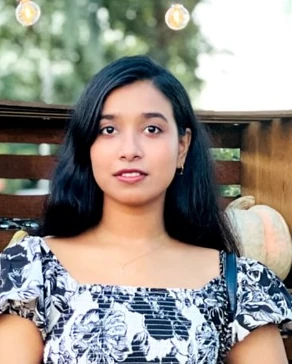

Shazneen Chowdhury
Ph.D. student · Since Fall 2024
Treatment wetlands; nutrient management under varying weather conditions; advanced water and wastewater treatment
Awards
- UCF FCI Student Scholarship
- Florida AWMA Scholarship